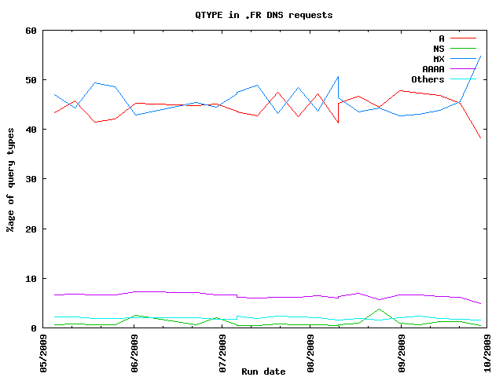

| Query type | Meaning | Percentage of requests |
|---|---|---|
| MX | mail exchange | 54.83 |
| A | a host address | 38.25 |
| AAAA | IP6 Address | 4.90 |
| NS | an authoritative name server | 0.50 |
| 255 | 0.37 | |
| TXT | text strings | 0.37 |
| 38 | 0.30 | |
| SOA | marks the start of a zone of authority | 0.23 |
| SRV | Server Selection | 0.17 |
| SPF | 0.03 | |
| CNAME | the canonical name for an alias | 0.02 |
| PTR | a domain name pointer | 0.02 |
| 614 | 0.00 | |
| 0 | 0.00 | |
| NAPTR | Naming Authority Pointer | 0.00 |
| 1647 | 0.00 | |
| HINFO | host information | 0.00 |
| 26226 | 0.00 | |
| NSEC | NSEC | 0.00 |
| AFSDB | for AFS Data Base location | 0.00 |
| 15873 | 0.00 | |
| 64008 | 0.00 | |
| DNSKEY | DNSKEY | 0.00 |
| SSHFP | SSH Key Fingerprint | 0.00 |
| 16399 | 0.00 | |
| 79 | 0.00 | |
| 3840 | 0.00 | |
| DS | Delegation Signer | 0.00 |
